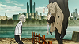
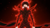

문호 스트레이독스는 실제 문호들의
이름과 작품을 모티브로 한 이능을 가진 인물들이,
각자의 신념과 목적을 안고 격돌하는
이능 배틀 액션물이다.
이능이 실존하는 세계에서
국가와 조직, 범죄 세력이 서로 충돌하는
보이지 않는 전쟁이 이어지는 도시 요코하마를 무대로 펼쳐지며,
그곳은 빛과 어둠이 가장 치열하게 부딪히는 전장이 된다.
고아원에서 버림받고 방황하던 소년 나카지마 아츠시가,
강물에 몸을 던져 죽음을 시도하고 있던 다자이 오사무를
우연히 구해내는 순간부터 시작된다.
그 인연을 계기로 아츠시는
법과 정의의 경계를 넘나들며 이능 사건을 해결하는
해결사 조직 ‘무장 탐정사’에 합류하게 되고,
자신이 지닌 힘과 존재 이유를 찾아가며
다양한 사건 속으로 뛰어든다.
한편 도시의 깊은 밑바닥에서는 포트마피아가
폭력과 공포를 기반으로 요코하마의 그림자를 지배하고 있었으며,
무장 탐정사와 포트마피아는 서로의 목을 겨누면서도
동시에 도시의 균형을 떠받치는
두 기둥으로 존재한다.
세력 간의 끝없는 대립 속에서
아츠시는 수많은 위기와 선택의 순간을 마주하며,
결국 자신의 길을 스스로 결정해야만 하는
진짜 싸움에 직면하게 된다.
한 남자는 이 시대를 보며
마주한 수많은 죽음과 절규 속에서
그는 한 가지 진실을 깨달았다—
“힘은 누군가를 지키기 위해 존재해야 한다.”
무력이 법을 대신하고
폭력이 해결이 되어버린 세상에서
정의는 차갑게 방치되어 있었다.
그렇기에 그는 결단한다.
칼을 휘두르기 위한 조직이 아니라,
누군가의 손을 붙잡기 위해 싸우는 집단을 만들겠다고.
그 순간,
무장 탐정사가 세상에 모습을 드러냈다.
이능력을 저주로 받아들이지 않고,
재능으로 바꾸기 위해 모인 사람들.
경찰도 손쓸 수 없는 사건들을 해결하고,
한 사람의 생명을 최우선으로 두는 조직.
그들의 존재는
포트 마피아의 대척점에 서 있음으로써
비로소 도시의 균형을 이루게 했다.
인
상
인
부
조
불량배들을 묶는, 「무장탐정사」의 사장.
좀처럼 겉으로 드러나는 것은 없지만,
위엄있는 인격자로, 후쿠자와 유키치는
차가운 검술과 고독함 때문에 전장에선
‘은빛 늑대’라고 불리기 시작했다.
인
간
실
격
이능력 집단 「무장 탐정사」 소속.
죽음에 대한 집착으로 매일같이
자살 방법을 탐구하는 기행의 소유자.
고통을 싫어하며, “가능하면 미녀와
함께 동반자살을 하고 싶다”는
기묘한 신념을 갖고 있다. 평소엔
가벼운 농담과 허술한 태도로 주변을
속이지만, 내면에는 상황을 냉정하게
분석하는 전략가적 기질이 숨겨져 있다.
월
하
의
짐
승
거대하고 사나운 호랑이로 변신하는
이능의 소유자. 무의식 속에서 날뛰던
것을 다자이 오사무에게 구조되어
「무장탐정사」에 입사했다. 마음이 약한
사람이지만 상냥하고, 만일의 경우에는
스스로를 희생하더라도 다른 사람을
지키기 위해 대담한 행동을 한다.
시작은 혼란이었다.
요코하마의 뒷세계가 피로 물들고,
힘 없는 자가 순식간에 삼켜지던 잔혹한 시대.
정부도, 경찰도, 법도 통제할 수 없었던 무질서 속에서
능력자들의 힘은 더 이상 개인의 재능이 아니라
전쟁을 좌우하는 ‘무기’로 취급되기 시작했다.
그때,
어둠 속에 놓인 도시를 하나로 통제하고자 결심한 자가 있었다.
폭주하는 범죄와 무한히 늘어나는 희생을 멈추기 위해,
힘으로 혼란을 억누르는 조직을 만들겠다는 결의.
그 신념 아래
포트 마피아는 탄생했다.
질서의 이름으로 폭력을,
보호의 명목으로 피를 흘리며,
이능력자들로 구성된 그 조직은
요코하마의 어둠을 통치하는 ‘법 아닌 법’이 되었다.
그리고 시대는 그들을
악이라 부르면서도,
동시에 필요하다 말했다.
비
타
앨
리
스
포트마피아의 보스. 의사 출신으로
'정신없는 중년남자’. 적대하는 자는
가차없이 죽이는 잔인함을 간직하고
있다. 어떤 곤란한 국면에서도 냉정함을
잃지 않고 이론적인 「최적화」를 요구한다.
엘리스라는 아름다운 소녀를 익애하며
한시도 놓지 않는다.
때
묻
은
슬
픔
에
과거, 다자이 오사무와 함께 ‘쌍흑’으로
불렸던 남자. 전투 능력 면에서 최정상급을
자랑하는 이능력자로, 작은 체구와는
달리 근접전에서 압도적인 힘을 드러낸다.
상황을 정면 돌파하는 호전적이고 직선적인
전투 성향을 지녔으며, 중력을 자유자재로
조종하는 이능을 통해 실전에서 강력한
파괴력과 제압력을 발휘한다.
라
쇼
몽
흉악한 포트 마피아의 구성원.
검은 외투를 감싸고
차가운 표정을 짓고 거리를
활보하는 모습은 마치 사신.
군경 또한 손을 댈 수 없고, 또
탐정사 안에서도
「이 녀석만큼은 만나지 말라고,
만나면 도망가」라고
두려워하는 존재이다.

인생만사 새옹지호
고아원에서 쫓겨난 나카지마 아츠시가
우연히 다자이 오사무를 만나고, 그를
계기로 무장탐정사에 들어가며 이야기가
시작된다. 아츠시의 능력인 백호를 노리는
포트 마피아가 지속적으로 공격해오고,
아츠시는 그 과정에서 자신이 가진 가치와
존재 이유를 찾아가게 된다.

만약 오늘 이 짐을 내려놔도 된다면
미국 초능력 조직 길드가
요코하마에 침공하며,
무장탐정사 vs 길드 vs 포트 마피아의
3파전 구도가 펼쳐진다.
아츠시는 길드와의 싸움 속에서
더 강하게 성장하고, 도시를 지키기
위한 큰 전투가 이어진다.
동족상잔
도스토예프스키가 이끄는 범죄 조직의 등장,
그는 사람들을 죽음으로 몰아넣는
위험한 능력을 가지고 있으며, 요코하마
전체를 혼란에 빠뜨리는 계획을 실행한다.
탐정사와 마피아는 처음으로 공동전선을
형성하고, 도스토예프스키의 음모에 대응한다.
그대도 죄인, 나도 죄인
도스토예프스키가 체포된 후, 탐정사는
누명을 쓰고 조직 전체가 위기에 빠지며,
다자이를 비롯한 핵심 인물들이 적과의
심리전, 탈출, 반격을 펼친다. 탐정사는
자신들에게 씌워진 혐의를 벗기기
위해 검은 수수께끼를 풀어나간다.
황혼 속의 작별
도스토예프스키가 체포된 후, 탐정사는
누명을 쓰고 조직 전체가 위기에 빠지며,
다자이를 비롯한 핵심 인물들이 적과의
심리전, 탈출, 반격을 펼친다. 탐정사는
자신들에게 씌워진 혐의를 벗기기
위해 검은 수수께끼를 풀어나간다.